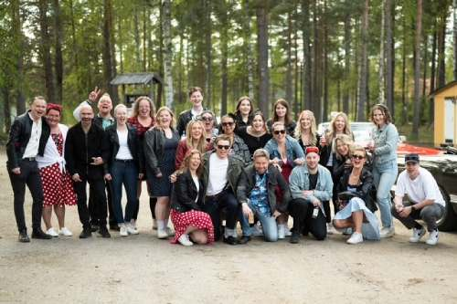
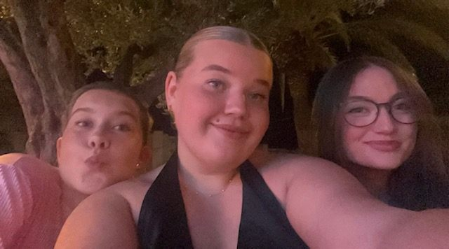

Vem är Moa?
Jag heter Moa Jönsson, är 20 år och bor i Sundsvall. Har sen 2 år tillbaka jobbat innom en livsmedelsbutik, ICA, men pluggar numera Webbutveckling på Mittuniversitetet i Sundsvall. Jag är en social tjej som spenderar majoriteten av min fritid tillsammans med kompisar och när jag inte är med dem föredrar jag att läsa. Resa, lyssna på musik och vandra i fjällen är också något jag gillar.
Min familj
I en by utanför Sundsvall bor jag min mamma, pappa och två syskon. Jag är äldst, sen kommer lillebror Hannes som är 17 år och lillasyster Emma som är 13 år. Förutom min familj har vi tre katter, Leo, Ninja och lilla Sigge. Vi åker så ofta vi kan till Norge och umgås med min pappas bror och hans familj i Ålesund eller i deras fjällstuga i snörika Bjorli. En stor del av mina familjeminnen kommer därmed från Norge, under min uppväxt spenderade vi en stor del av sommrarna i Norge. Vi kunde åka runt med husvagnen eller spendera tid hos min farbror och hans familj. Att åka till Norge har blivit en trdition för min familj, detta gäller självklart inte bara på sommaren. Under vinterhalvåret spenderar vi tid i fjällorten Bjorli tillsammans med min farbror och hans familj samt familjekompisar, vi brukar fira jul, nyår och till och med påsk i det norska fjället.
Min vänkrets
Det är tack vare min familj och främst mina vänner som har hjälpt mig bli den jag är idag. Jag har genom skola och jobb lärt kännan en mängd olika människor som jag idag kallar för min vänner. En av mina allra bästa vänner heter Alice, vi har kännt varandra sen vi var ungefär 3 och 4 år gammla. Hon har varit där under hela min uppväxt och hjälpt mig genom livets alla mot och medgångar. På senare år har jag träffat vänner som jag vet är med mig genom vått och tårt, det har varit tack vare mitt jobb på ICA.

